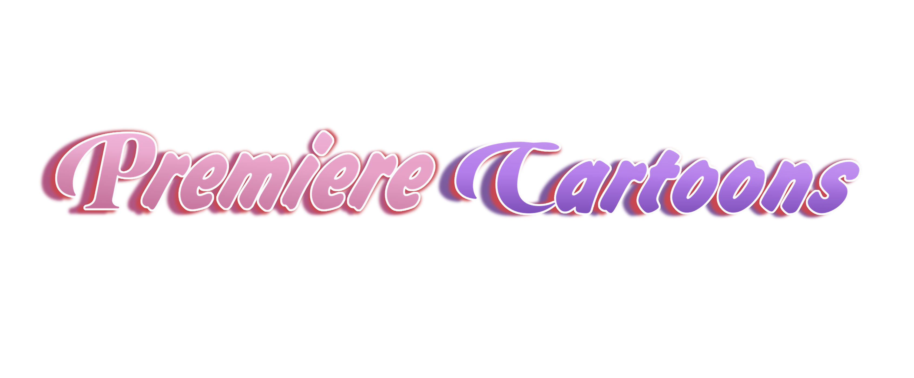

About Us
June 1, 2010
Premiere Cartoons is an Alternate Universe or fanmade studios where they brodcast any fanmade shows or AU from original canon shows in worldwide. It was founded on June 1, 2010. Premiere Cartoons were also available in many countries. This can be English Sub for PC anime, some original projects made from Premiere Cartoons. Premiere Cartoons includes anime, animated series, MMD series, Sitcoms, Gag shows, etc. This studio was made by Premiere Cartoons Creator in Philippines. Premiere Cartoons is entirely fanon and made up, nothing you see here is confirmed by the actual owners of the various original works. We also avoid copyright from the actual series that were existed.
The main 2 projects contains: FNAFM 🐻 (2016), The Freakout 🔥 (2019) Made up with 3D Animation, CGI, etc.
DISCLAIMER I do not post my Main Projects to the public MMDC due to many people complaining about breaking rules of uncredited parts of the models. Please respect that. TBH, Premiere Cartoons were not involve to the MMDC so it is not allowed to post about Premiere Cartoons Projects in public. Thank you. Premiere Cartoons does NOT give commercial use and profit.